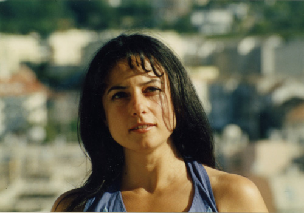

Luísa Villalta naceu na Coruña o 15 de xullo de 1957. A cidade da Coruña influirá na súa obra literaria. En concreto, na súa infancia, Luísa Villalta pasou moito tempo na casa da súa familia na rúa Vila de Laxe. Os seus pais, ambos con formación en música, transmitíronlle o amor pola música, e ela comezou a estudar violino aos oito anos no Conservatorio de Música da Coruña. A súa formación académica transcorreu no colexio das Xosefinas e no Instituto Eusebio da Guarda. A súa paixón pola lectura acompañouna desde nena, explorando o mundo con curiosidade e decidida en seus propósitos. Ao longo dos anos, a música foi a súa ocupación principal, pero tamén escribiu poemas que máis tarde formarían o seu primeiro libro. En 1982, licenciouse en Filoloxía Hispánica e en Galego-Portugués pola Universidade de Santiago de Compostela.
Ademais de ser unha excelente violinista, tamén empezou a escribir e compor música. Na década de 1980, participou en eventos literarios e musicais, colaborando con diversos artistas. Mais tarde, comezou a ensinar en varios centros antes de asumir o cargo de profesora de lingua e literatura galega no Instituto Isaac Díaz Pardo de Sada.
Luísa Villalta é unha escritora multixenérica, que aborda a poesía, a literatura dramática, a narrativa e o ensaio. A súa obra atesoura varios títulos, entre eles "Música reservada", "Teoría de xogos" e "Os doces anos da guerra". No ámbito do teatro, destacan obras como "O paseo das esfinxes" e "As certezas de Ofelia". A súa produción literaria está profundamente influída pola súa paixón pola música e pola súa conexión coa cidade da Coruña.
Luísa Villalta tamén é coñecida pola súa actividade no ámbito social e político, participando en mobilizacións e escribindo artigos en xornais e revistas. A súa columna xornalística ofrece unha voz crítica e comprometida coa realidade social e cultural do seu tempo. O seu pensamento é profundamente reflexivo e cuestionador, abordando temas como o feminismo, a política cultural e a crise medioambiental.
En 2004, Luísa Villalta foi galardoada co premio de poesía Espiral Maior polo seu libro "En concreto", que rende homenaxe á cidade da Coruña. A súa obra é unha reflexión profunda sobre a vida urbana, a memoria colectiva e a súa propia identidade como poeta e cidadá. A súa voz resoa como unha chamada á acción e á transformación, tanto na literatura como na sociedade.
